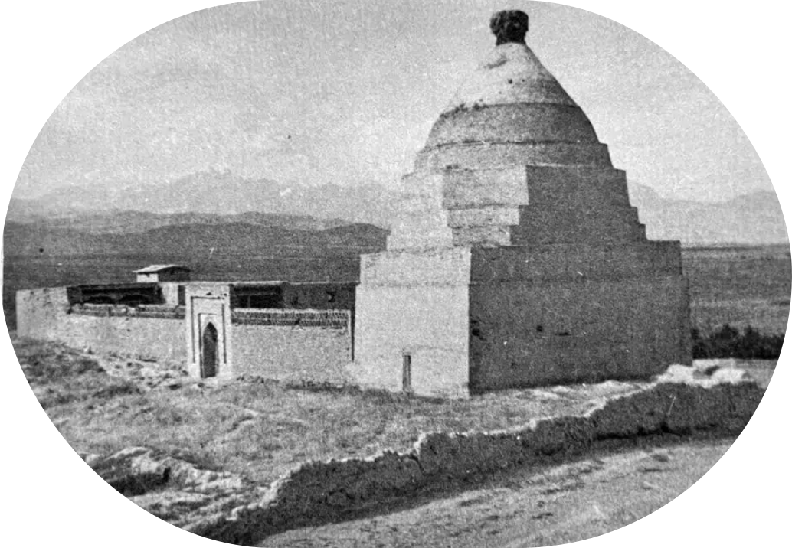
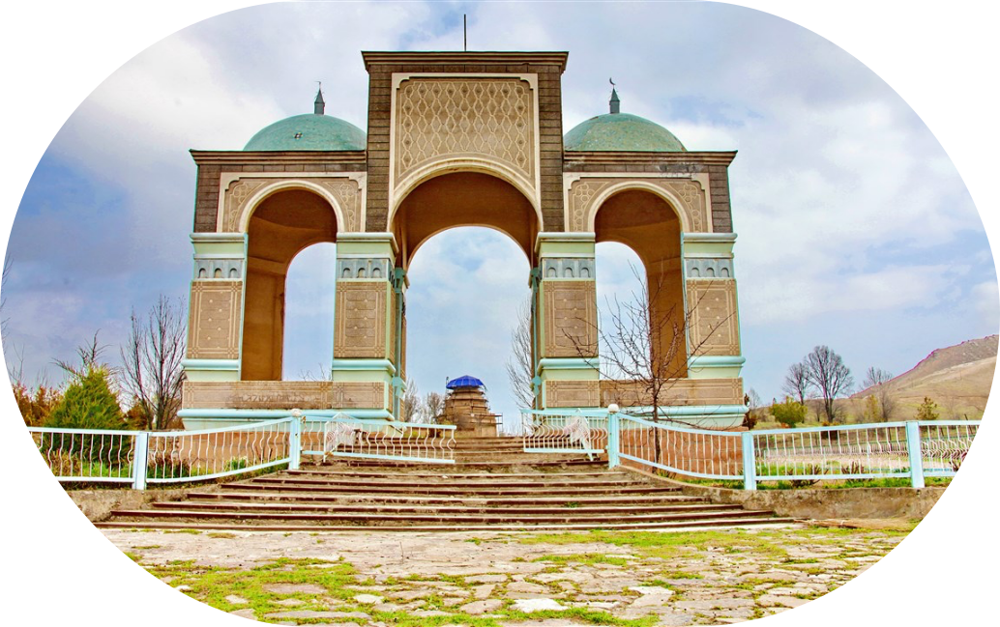

Шах - Фазиль
Шах-Фазиль мавзолейи: тарыхы
Шах-Фазиль мавзолейи — Кыргызстандагы эң маанилүү тарыхый-архитектуралык эстеликтердин бири, Жалал-Абад облусунун Гулистан айылында жайгашкан. Бул байыркы имарат архитектурасы менен гана эмес, ошондой эле уламалар жана тарыхый окуялар менен байланышкандыгы үчүн да маданий мурастын маанилүү бөлүгү болуп саналат.
Тарыхый башаты
Комплекс арабдардын бул жакка ислам динин жайылтуу үчүн келгендиги жөнүндө уламалар менен байланыштуу. Аларды Мухаммед пайгамбардын небереси Шах-Джарир жетектеген. Намаз маалында карама-каршылар мусулмандардын башын кыркып салышат. Шах-Джарирдин кара терилүү келинчеги Сафед-Булон баатыр болуп, баардык каза болгондорду көмөт. Аллах аны актаган жана ошондон кийин эл аны “Сафед-Булон” — Ак аял деп аташкан.
Шах-Джарирдин ишин анын уулу Шах-Фазиль улантат. Ал карама-каршыларды жазалап, ислам динин жайылтууну улантат.
Мавзолей XI–XII кылымдарда, Караханийлер доорунда курулган. Ал жерге Шах-Фазиль коюлуп, эл аны ыйык жоокер катары урматташкан. Анын бул аймакты душмандардан коргоп жатып каза болгону айтылат.
Башка бир версия боюнча, мавзолей Сафед-Булон урматына курулган — ал ислам динин бул жакка алып келген дааватчы болгон. Ошондуктан мавзолейдин жанында башка ыйык жерлер да бар, алар зыяратчыларды өзүнө тартат.

Архитектуралык өзгөчөлүктөрү
Мавзолей күйгөн кыштан курулуп, күмбөзү бар тик бурчтуу формада жасалган. Негизги фасады геометриялык оймо-чиймелер жана ислам архитектурасына таандык резьба менен кооздолгон. Ичинде арабча жазуулар жана байыркы сүрөттөрдүн издери бар.
Мавзолейдин айланасында башка архитектуралык эстеликтер — некрополь жана байыркы көрүстөндөр жайгашкан, бул комплекс тарыхый мааниге ээ болгон жер.
Бул курулуш бүгүнкү күнгө чейин дээрлик өзгөрүүсүз сакталып келген. Жер титирөөлөр жана табигый кырсыктарга карабай, ал өз автентикалуулугун жоготкон эмес. Реставрация иштери кылдаттык менен жүргүзүлгөн.
Маданий мааниси
Бүгүнкү күндө Шах-Фазиль мавзолейи тарыхый мурастын объектиси болуу менен катар зыярат кылуучу ыйык жер болуп эсептелет. Комплекс мусулман ыйык жайы катары кеңири таанымал. Бул жерге адамдар ыйыктын арбагына таазим кылуу, батасын алуу жана байыркы архитектуранын улуулугун көрүү үчүн келишет.
Уламалар боюнча, мавзолейди зыярат кылуу жан дүйнөнүн тазаланышына жана тилектердин аткарылышына өбөлгө болот. Жыл сайын бул жерге ишенимдүүлөр жана туристтер келип, аймактын маданияты жана салттары менен таанышышат. Бул эстелик аймактын бай тарыхын, руханий мурасын жана Борбор Азиядагы маданий алмашуунун маанилүүлүгүн эскертип турат.
Так жайгашкан жери:
Координаттары: 40.7700° N, 73.2986° E
Бишкектен автоунаа менен жол: 8–9 сааттай (болжол менен 600 км).
Ошко уча аласыз (1 сааттай), андан соң Өзгөнгө чейин (55 км, болжол менен 1 саат автоунаа менен).